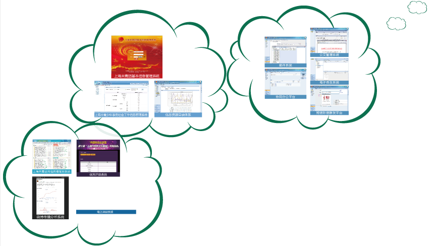
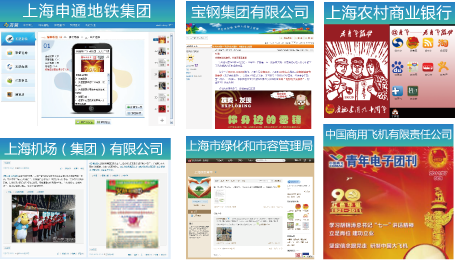
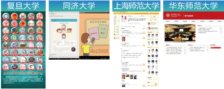
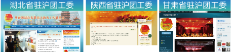
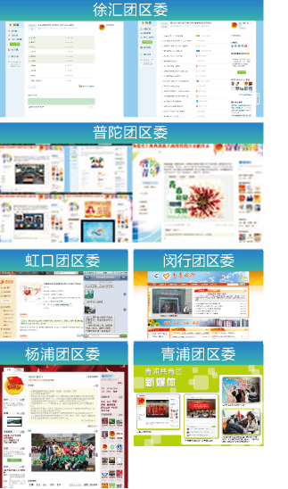

上海共青团积极构建“同心多层”的枢纽型组织架构，依托信息化建设体系，不断扩大组织覆盖，夯实基层基础，强化组织动员，着力使我们的组织覆盖紧跟青年的流动和分布，组织方式适应青年的生活、学习和工作特点，共青团的组织建设焕发出新的活力。
通过上海共青团基本信息管理系统、上海市青少年事务社会工作信息管理系统，我们实时统计团员和社工动态，实现了团组织和社工组织的动态管理；通过优秀评选系统，我们不断积累优秀青年的成长信息，实现了青年人才的跟踪培养；通过公文管理系统、电子传真系统、邮件系统等信息化手段，我们极大的提高了办公效率，实现了信息的高效流转；通过信息资源目录体系，我们对共青团的信息资源进行了系统梳理，实现了信息的有效串联；通过短信、彩信群发平台，我们可以便捷的向团组织和团员青年发布各类信息，实现了共青团的快速动员；通过青少年网络舆情采集分析系统和热点微博检索系统、电话调研系统，我们可以及时掌握青年关注的热点问题，始终与青年的需求保持一致。




上海各级共青团组织积极利用新媒体技术，夯实组织基础，拓展动员领域，深化工作内涵，提升青年参与热情，使党团组织的“意愿”与青年的“自愿”形成共振，实现了对青年的快速动员和广泛覆盖。
